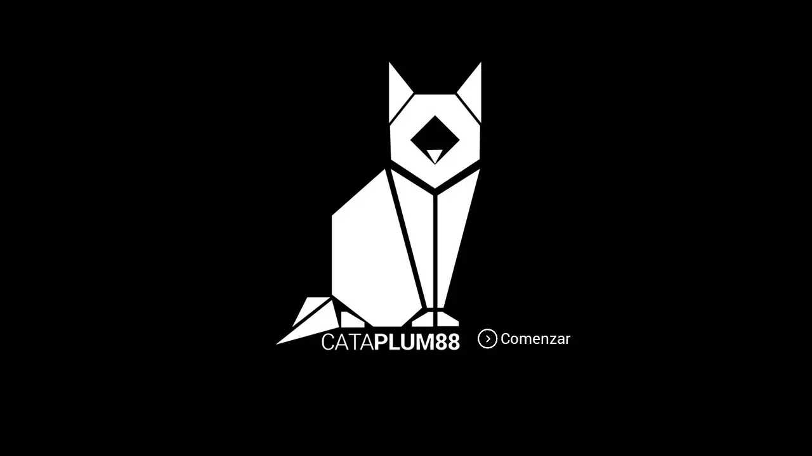

Catalina Acevedo
*learning manager consulting*Master's degree in Innovation and Educational Technologies and UX/UI, I am a seasoned Learning Manager Consultant with nearly nine years of expertise in internal communications, marketing, teacher training in technology integration, and project management. My career highlights include the successful development and implementation of tailored learning and development programs aligned with organizational objectives. With a background in internal communications and marketing, I bring a unique combination of collaboration and content creation skills to the table.
I am a native Spanish speaker, fluent in English, and currently learning French.
Thinking to create value - Projects
I specialize in the comprehensive design, production, and implementation of e-learning content, materials, and resources. My expertise extends to collaborating with teachers and external vendors, fostering the development of innovative projects that enhance the educational experience. Through close partnerships, I strive to create dynamic and engaging learning materials that cater to diverse learning styles.
Digitalization
Risk management system projectCommunication
Momento Docente - Training teachersInnovation
Redesign and project managementProduction of educational resources
Throughout my professional journey, my work has been centered around the dynamic realm of creating, producing, and adapting content tailored to the unique needs and experiences of users. My approach involves a meticulous understanding of user preferences, backed by thorough trend research and a keen awareness of evolving educational landscapes. I have actively engaged in building meaningful relationships to comprehend the intricacies of user interactions and expectations.
